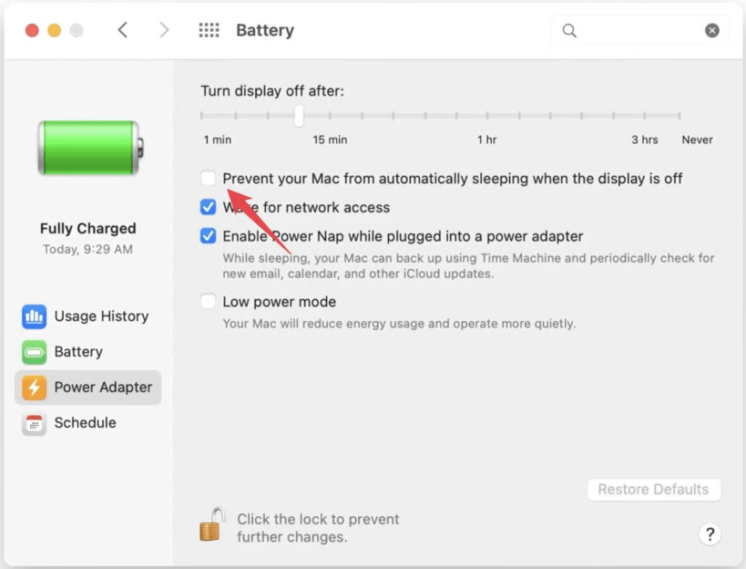

Scheduled publishes require the browser (and the extension) to be active at the scheduled time. If the computer sleeps, hibernates, or the browser profile is closed, scheduled publishes won't run. This page explains how to reduce the chance of missed publishes.
Why this matters
Chrome extensions execute inside the browser process. If the browser is closed, the profile is logged out, or the OS suspends the machine, the extension can't run background tasks or trigger scheduled publishes. Chrome does NOT need to be visible. Tasks will work from background or minimized tab state.
Windows (recommended settings)
Open Settings → System → Power & battery (or search Power & sleep).
Under Screen and sleep, set When plugged in, put the device to sleep to Never (or a value longer than your scheduled publish window).
Optional: increase the timeout for On battery power if you expect publishes while on battery (this will affect battery life).
Ensure sleep and hibernate are disabled (or set to a timeout longer than your scheduled publish window).
Keep Chrome open. You may still lock your PC — scheduled publishes can run while the screen is locked as long as the machine is not sleeping or hibernating.
Open System Settings → Displays (Ventura+) or System Preferences → Energy Saver (older macOS).
Enable Prevent your Mac from automatically sleeping when the display is off or uncheck options that put the computer to sleep automatically.
In Battery settings, increase the display sleep timeout or disable automatic sleep while plugged in.
Keep Chrome running. You may lock your Mac — scheduled publishes can run while the screen is locked as long as automatic sleep/hibernation is disabled.

Power & Sleep / Energy settings — set sleep to Never or increase timeout (file: images/help/power-settings.png).
Quick note: the important settings are to disable sleep and hibernate and keep Chrome running with the profile that has the AutoList Pro extension active. Locking the screen is fine; just ensure the machine does not sleep or hibernate.
Warning: Preventing sleep or disabling lock reduces security and increases power usage. Apply these settings only on trusted machines and consider reverting them after the scheduled publish completes.
Restore schedule warning
If you previously chose Don't show this again for the schedule warning and want to see it again, open the extension Menu and look for the setting to reset warnings (or clear the extension's local storage for schedule_hide_warning).
Still having trouble? Open the extension popup and check the Scheduled Tasks list to confirm the publish is scheduled. If it repeatedly fails, consider running Chrome on a machine with predictable uptime or contacting support with the publish timestamp and any extension logs.